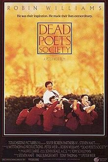

Luciana Tedesco, 50 anos
Criada pela gaúcha Luciana Tedesco, o Studio Carpe Diem foi desenvolvido com o objetivo de tornar a movimentação e os exercícios algo inspirador e prazeroso. Um espaço de diversão e inspiração! Focado para mulheres da melhor idade..."Chega um período da nossa vida que temos que aproveitar o momento, e carpe diem significa viva o dia, viva o hoje, viva o momento!"
Meios de contato com Luciana Tedesco
Lista de qualidades para pertencer ao Carpe Diem
- Simpatia
- Alegria
- Vontade de aprender
- Autenticidade ⠀⠀⠀⠀⠀⠀⠀⠀⠀⠀⠀⠀⠀⠀⠀⠀⠀⠀⠀⠀⠀⠀⠀⠀⠀⠀⠀⠀⠀⠀⠀⠀⠀⠀⠀⠀⠀⠀⠀⠀⠀⠀⠀⠀⠀⠀⠀⠀⠀⠀⠀⠀⠀⠀⠀⠀⠀⠀⠀⠀⠀⠀⠀⠀⠀⠀⠀⠀⠀⠀⠀⠀⠀⠀⠀⠀⠀⠀⠀⠀⠀⠀⠀⠀⠀⠀⠀⠀⠀⠀⠀⠀⠀⠀⠀⠀⠀⠀⠀⠀⠀⠀⠀⠀⠀⠀⠀⠀⠀⠀⠀⠀⠀⠀⠀⠀⠀⠀⠀⠀⠀⠀⠀⠀
Quer pegar umas dicas de exercício?
Clique aqui para acessar nossa assistente virtualAssita agora ao vídeo do Prof. Filicio Mulinari sobre o termo Carpe Diem:
A escolha do nome teve como inspiração o filme "Sociedade dos Poetas Mortos"

Leia algumas matérias sobre o filme estrelado por Robin Williams:
Carpe Diem e o filme "Sociedade dos Poetas Mortos"
Trailer: Sociedade dos Poetas Mortos
Os 11 melhores filmes da carreira de Robin Williams
A seguir temos um vídeo interessantíssimo para você!
O que podemos aprender com o filme Sociedade dos Poetas Mortos
© 2021 - Studio Carpe Diem